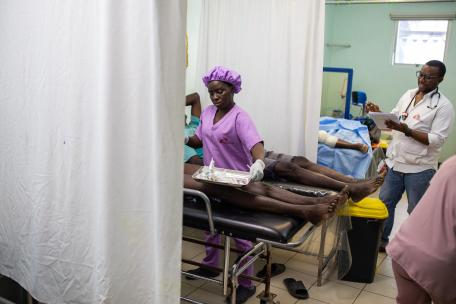

Greu augment de víctimes i ferits en un Port-au-Prince sumit al caos
L'estat d'emergència a la capital d'Haití desencadenat després d'un possible ajornament de les eleccions generals provoca un greu augment de ferits a la ciutat, especialment de dones, nens, nenes i grans. Aquí, estem intensificant la nostra resposta mèdica, però la pressió i les necessitats són encara més grans.
Metges Sense Fronteres estem intensificant les nostres activitats mèdiques a Port-au-Prince, Haití, per atendre el creixent nombre de ferits al caos en què està sumida la capital haitiana des que el 28 de febrer s'anunciés que les eleccions generals podrien ajornar-se fins a l'agost del 2025 .
La violència ha adquirit una nova dimensió el primer cap de setmana de març i ha provocat una explosió en el nombre de víctimes i ha desencadenat la declaració de l'estat d'emergència per part del govern. Davant d'aquest nou deteriorament de la situació de seguretat, el nombre de ferits -molts dones, nens, nenes i adults grans- que requereixen tractament per part dels equips de MSF ha augmentat considerablement.
"Els 50 llits del nostre hospital de Tabarre han estat tots ocupats des de principis de febrer, però el 28 de febrer la situació va empitjorar i vam haver d'augmentar la quantitat de llits a 75", diu el nostre coordinador general Mumuza Muhindo Musubaho. "Estem rebent una mitjana de cinc a deu nous casos al dia, i estem treballant al límit de la nostra capacitat".
Mentre que diversos hospitals locals han deixat de funcionar, hem reobert el nostre centre d'urgències al districte de Turgeau, dues setmanes abans del previst, per augmentar les nostres activitats mèdiques i reduir la pressió sobre les altres instal·lacions existents. El 4 de març, també obrim el nostre nou hospital per a ferits a la comuna de Carrefour, amb un quiròfan i 25 llits. Busquem actualment hospitals addicionals on poder treballar a diferents zones de Puerto Príncipe, ja que la inseguretat i els improvisats controls de carretera impedeixen a les ambulàncies transportar els pacients.
Milers de persones han fugit de casa seva els últims dies a causa dels enfrontaments als seus barris, mentre que les altes tensions actuals ens han obligat a suspendre temporalment les nostres clíniques mòbils a diversos llocs. La inseguretat a Puerto Príncipe també ha contribuït a l'augment de la violència sexual en els darrers anys, i els nostres equips temen que aquestes xifres augmentin encara més a mesura que segueixi creixent el nombre de desplaçats. L'any passat vam atendre més de 4.000 supervivents d'agressions sexuals.
Moltes zones de la ciutat estan actualment sumides en la violència, que és la culminació d'una crisi política, econòmica i social que assola el país des de l'assassinat del seu expresident Jovenel Moïse el 2021. El principal port del país és pràcticament inaccessible a causa de la tensió i la inseguretat a la major part de la ciutat. L'aeroport internacional també fa uns quants dies que està tancat.
"També estem preocupats perquè és extremadament difícil accedir a les nostres reserves de subministraments mèdics, no només per la situació al port, sinó també per la impossibilitat de continuar amb els tràmits administratius per al despatx de duanes", va declarar Musubaho. "Temem quedar-nos sense medicines i subministraments mèdics, que són absolutament essencials per cobrir les enormes necessitats a què ens enfrontem en aquest moment".
A finals de 2022, el país va estar pràcticament paralitzat durant setmanes quan una onada de manifestacions va portar a declarar el peyi lok (tancament del país), obstaculitzant la circulació, l'activitat econòmica, el subministrament d'aigua i combustible i obligant molts centres sanitaris a suspendre les activitats. El sistema sanitari de Puerto Príncipe torna a estar sotmès a una enorme pressió, lluitant per satisfer les necessitats.
06/03/2024, Puerto Príncipe (Haití), Alexandre Marcou